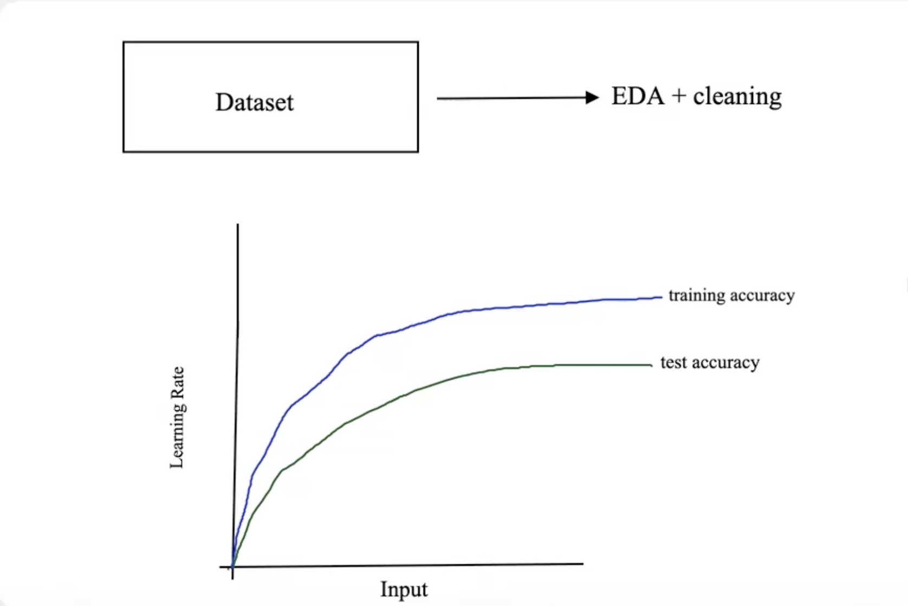

Attendee List
- Team Lead
- Project Manager
- Developers
Meeting Details
- Attendance: Everyone present
- Time: 10:00 AM - 12:00 PM
- Place: Tokyo, Japan
Previous Work
- Selected a dataset containing at least 10,000 movie rating records
- Conducted exploratory data analysis (EDA) to understand the dataset
- Visualized the data using histograms and box plots to examine distribution, skewness, and outliers
- Applied the interquartile range (IQR) method to identify and remove outliers
Dataset Overview
The dataset consists of metadata for approximately 45,000 movies from the Full MovieLens dataset,
including films released on or before July 2017.
It contains detailed information such as cast, crew, plot keywords, budget, revenue, release dates,
languages, and production details.
In addition, the dataset includes over 26 million ratings from approximately
270,000 users, with ratings on a scale from 1 to 5.
The data was obtained from kaggle and is commonly used
for recommendation system and data analysis tasks.
Agenda
- Discuss which classification model to use based on class imbalance
- Discuss how to split the dataset (training/test) and whether to include a validation set for hyperparameter tuning using k-fold cross-validation
- Discuss evaluation metrics such as accuracy, precision, and F1 score
Things to do prior to next weekly meeting
- Finish modeling and hyperparameter tuning
- Analyze evaluation and learning curves
- Document key inferences and conclusions
Meeting Recordings
